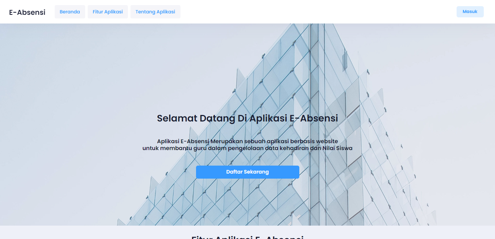

Website Absensi Kelas

Ini adalah website absensi kelas yang dibangun menggunakan Laravel dan database MySQL. Website ini berfungsi untuk mencatat kehadiran siswa di kelas.
Fitur utama termasuk manajemen data siswa, data kelas, dan laporan absensi.